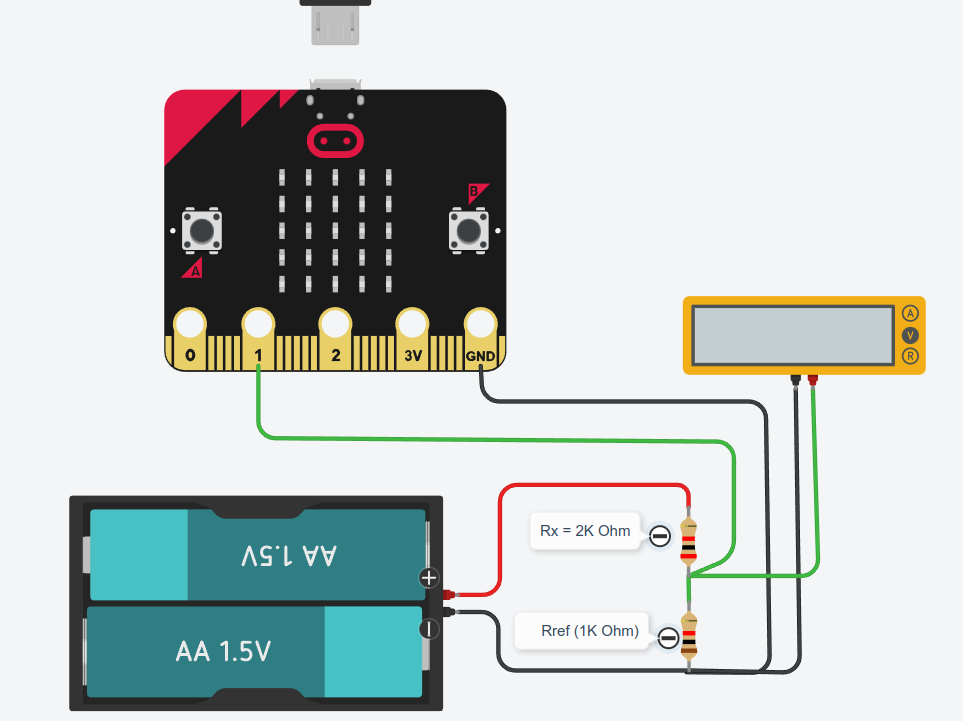
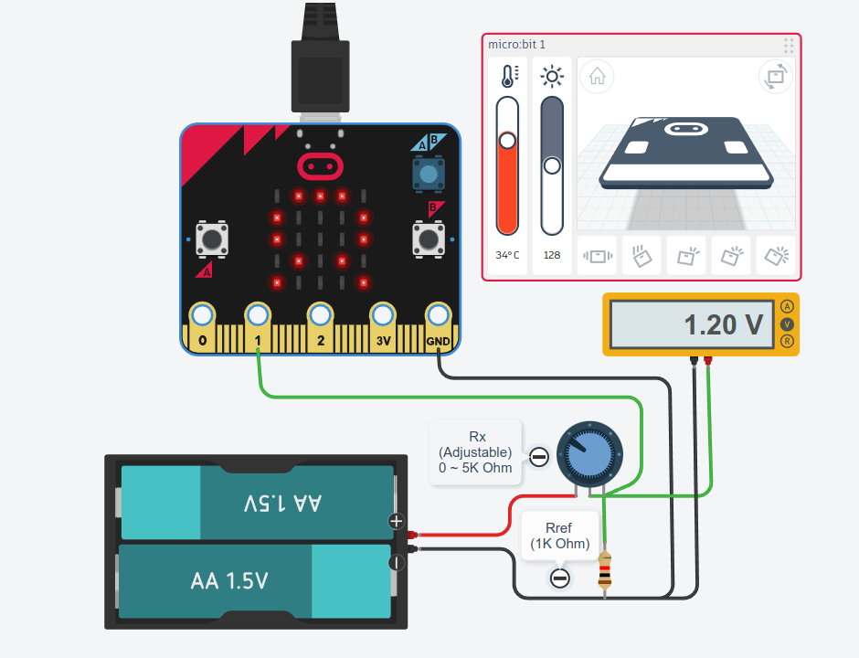
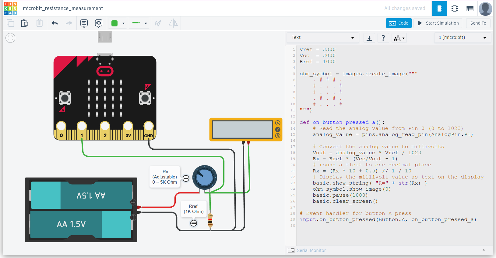

การวัดค่าความต้านทานด้วยไมโครบิตและจำลองการทำงานด้วย AUTODESK Tinkercad#
Keywords: Circuit Simulation, Arduino Uno, AUTODESK Tinkercad Circuits Micro:bit, Resistance Measurement, Python Coding
▷ ซอฟต์แวร์ AUTODESK Tinkercad Circuits และบอร์ด Micro:bit#
ซอฟต์แวร์ Tinkercad Circuits เป็นซอฟต์แวร์ที่ใช้ในการฝึกออกแบบและต่อวงจรไฟฟ้า-อิเล็กทรอนิกส์ และจำลองการทำงานได้เสมือนจริง (Circuit Simulation & Virtual Circuit Prototyping) โดยใช้งานผ่านเว็บเบราว์เซอร์และผู้ใช้ไม่จำเป็นต่อติดตั้งซอฟต์แวร์ใด ๆ
บอร์ด Micro:bit เป็นบอร์ดไมโครคอนโทรลเลอร์ (Microcontroller Board) ที่สามารถนำมาใช้ในการเขียนโปรแกรม ซึ่งรองรับการเขียนโค้ดด้วยภาษาคอมพิวเตอร์ได้หลายภาษา
ซอฟต์แวร์ Tinkercad Circuits รองรับการใช้งานบอร์ดไมโครคอนโทรลเลอร์ Arduino Uno และบอร์ด Micro:bit ผู้ใช้สามารถนำมาต่อวงจรทดลองร่วมกับชิ้นส่วนไฟฟ้าและอิเล็กทรอนิกส์พื้นฐานประเภทต่าง ๆ ได้ รวมถึงเขียนโค้ด และจำลองการทำงานของวงจรโดยรวมแบบเสมือนจริงได้
บทความนี้นำเสนอกิจกรรมการเรียนรู้ โดยใช้บอร์ดไมโครบิต นำมาใช้ในการวัดความต้านทาน และเขียนโค้ดด้วยภาษา Python เพื่อสาธิตการทำงานของอุปกรณ์
▷ การวัดค่าความต้านโดยใช้บอร์ดไมโครคอนโทรลเลอร์#
สมมุติว่า มีตัวต้านทานที่ไม่ทราบค่า และต้องการวัดค่าความต้านทานโดยใช้บอร์ดไมโครคอนโทรลเลอร์ ก็มีแนวทางดังนี้
- ให้ใช้ตัวต้านทานที่ทราบค่าและเป็นตัวต้านทานที่มีค่าคงที่ และใช้เป็น"ตัวต้านทานอ้างอิง" (เรียกว่า ) มีเปอร์เซ็นต์ความคลาดเคลื่อนน้อย เช่น +/-1% นำมาต่ออนุกรมกับตัวต้านทานอีกตัวหนึ่งที่ไม่ทราบค่า (เรียกว่า )
- เพื่อการสาธิต กำหนดให้ อยู่ในช่วงไม่เกิน และลือกค่าตัวต้านทานอ้างอิง เป็นต้น ซึ่งอัตราส่วนระหว่าง กับ และค่าความต้านทานสูงสุด ก็มีผลต่อความแม่นยำในการวัดค่าด้วยไมโครคอนโทรลเลอร์
- ตัวต้านทาน และ นำมาต่ออนุกรม และใช้เป็นวงจรที่เรียกว่า "วงจรแบ่งแรงดัน" (Voltage Divider) โดยให้ อยู่ด้านบน (High-side) และ อยู่ด้านล่าง แล้วนำไปต่อกับแหล่งจ่ายแรงดันไฟฟ้าคงที่แบบ DC เช่น 3V (แต่ไม่เกิน 3.3V !!! ในกรณีที่จะนำไปต่อวงจรใช้งานร่วมกับบอร์ดไมโครบิต)
- แรงดันไฟฟ้าที่ได้จากวงจรแบ่งแรงดัน ซึ่งได้จากจุดเชื่อมต่อระหว่างตัวต้านทานทั้งสอง จะถูกนำไปต่อเข้ากับขาของบอร์ดไมโครบิต เช่น PIN 1 เพื่อวัดระดับแรงดันไฟฟ้า มองว่าเป็นสัญญาณไฟฟ้าแบบแอนะล็อก (Analog Input Signal)
- ภายในชิปไมโครคอนโทรลเลอร์ มีวงจรที่เรียกว่า ADC (Analog-to-Digital Converter) ทำหน้าที่แปลงระดับแรงดันไฟฟ้าอินพุตในช่วง 0 ~ 3.3V ให้เป็นค่าตัวเลข ได้ตัวเลขจำนวนเต็มอยู่ในช่วง 0 ~ 1023 (มีความละเอียดในการแปลงค่าตัวเลข 10 บิต)
- เมื่ออ่านค่าตัวเลขและแปลงค่าตัวเลขให้เป็นแรงดันไฟฟ้าอินพุต ถัดไปก็จะสามารถคำนวณหาค่า ได้
ข้อสังเกต
- วงจรอิเล็กทรอนิกส์สำหรับการวัดค่าความต้านทานที่มีการใช้งานจริงนั้น มักมีฟังก์ชันการเลือกย่านวัดได้โดยอัตโนมัติ เช่น การปรับเลือกใช้ค่าของตัวต้านทานอ้างอิง ให้เหมาะสมกับช่วงหรือย่านการวัด และมีการใช้วงจรออปแอมป์ในภาคอินพุตสำหรับสัญญาณแอนะล็อก เช่น ทำหน้าที่เป็น Voltage Buffer เป็นต้น
รูปต่อไปนี้เป็นแผนผังการต่อวงจร ซึ่งใช้ตัวต้านทาน (ตัวต้านทานอ้างอิง) และ (สำหรับการตรวจสอบการวัดค่า) นำมาต่อเป็นวงจรแบ่งแรงดันไฟฟ้า โดยใช้แหล่งจ่ายไฟ DC ภายนอก ในตัวอย่างนี้เป็นแบตเตอรี่ 3V (สมมุติว่า แรงดันไฟฟ้าคงที่)

รูป: ตัวอย่างการต่อวงจรเพื่อวัดค่าความต้านทาน โดยใช้ซอฟต์แวร์ AUTODESK Tinkercad Circuits จำลองการทำงาน
จากรูปจะเห็นได้ว่า จุดเชื่อมต่อระหว่างตัวต้านทานทั้งสอง จะถูกกำหนดให้เป็นจุดวัดแรงดันไฟฟ้า และนำไปต่อเข้ากับขา PIN 1 ของบอร์ดไมโครบิต และในขณะเดียวกัน ก็มีการต่อมัลติมิเตอร์ ในโหมดโวลต์มิเตอร์ เพื่อวัดแรงดันไฟฟ้าที่จุดดังกล่าว เทียบกับ Ground (GND) ของวงจรไฟฟ้า (จุดต่าง ๆ ในวงจรที่มีการเชื่อมต่อด้วยสายไฟสีดำ)

รูป: การจำลองการทำงาน
ถ้าลองจำลองการทำงาน ในกรณีตัวอย่างนี้ ค่าแรงดันไฟฟ้าที่วัดได้ด้วยมัลติมิเตอร์ หรือ เท่ากับ ซึ่งสามารถคำนวณได้ดังนี้
จากสูตรการคำนวณ สามารถเขียนและจัดรูปใหม่ได้ดังนี้
ดังนั้นถ้าทราบค่า ก็สามารถนำไปคำนวณหาค่า ได้
ในกรณีที่ใช้บอร์ดไมโครบิต จะต้องเขียนโปรแกรมเพื่อให้อ่านค่าจากสัญญาณแอนะล็อกอินพุต และแปลงตัวเลขที่ได้ให้เป็นค่าแรงดันอินพุต จากนั้นก็ใช้สูตรสำหรับคำนวณหา
ถัดไปให้ลองเปลี่ยนจากตัวต้านทานคงที่สำหรับ โดยเลือกใช้ตัวต้านทานปรับค่าได้ ถ้าหมุนปรับค่าความต้านทาน จะส่งผลต่อค่าที่วัดได้อย่างไร ตามรูปตัวอย่างการต่อวงจรต่อไปนี้

รูป: การจำลองการทำงาน เมื่อใช้ตัวต้านทานปรับค่าได้
▷ โค้ด Python สำหรับการวัดค่าความต้านทานด้วยบอร์ดไมโครบิต#
โค้ด Python ต่อไปนี้ เป็นตัวอย่างการเขียนโค้ดและใช้คำสั่งสำหรับบอร์ดไมโครบิต
เพื่อวัดค่าแรงดันอินพุตที่ขา PIN 1 ซึ่งจะได้ค่าตัวเลขจำนวนเต็มเก็บค่าไว้ในตัวแปร
analog_value แล้วนำไปคำนวณค่าแรงดันไฟฟ้าซึ่งมีหน่วยเป็นมิลลิโวลท์ เก็บค่าไว้ในตัวแปร Vout
และนำไปคำนวณค่า ซึ่งจะได้ค่าเก็บไว้ในตัวแปร Rx
Vref = 3300
Vcc = 3000
Rref = 1000
ohm_symbol = images.create_image("""
. # # # .
# . . . #
# . . . #
. # . # .
# . . . #
""")
def on_button_pressed_a():
# Read the analog value from Pin 0 (0 to 1023)
analog_value = pins.analog_read_pin(AnalogPin.P1)
# Convert the analog value to millivolts
Vout = analog_value * Vref / 1023
Rx = Rref * (Vcc/Vout - 1)
# round a float to one decimal place
Rx = (Rx * 10 + 0.5) // 1 / 10
# Display the millivolt value as text on the display
basic.show_string( "R=" + str(Rx) )
ohm_symbol.show_image(0)
basic.pause(1000)
basic.clear_screen()
# Event handler for button A press
input.on_button_pressed(Button.A, on_button_pressed_a)
การวัดค่าความต้านทานในแต่ละครั้ง จะเกิดขึ้นก็ต่อเมื่อ มีการกดปุ่ม Button A บนบอร์ดไมโครบิต และเมื่อได้ค่า มาแล้ว ก็จะแสดงเป็นตัวเลขบนแผง LED Matrix ขนาด 5 x 5 พิกเซล มีหน่วยเป็นโอห์มและเป็นเลขทศนิยมหนึ่งตำแหน่งหลังจุด Decimal Point

รูป: การต่อวงจรโดยใช้ตัวต้านทานปรับค่าได้สำหรับ และเขียนโค้ด Python สำหรับไมโครบิต
▷ กล่าวสรุป#
บทความนี้นำเสนอกิจกรรมการเรียนรู้เกี่ยวกับวงจรไฟฟ้า-อิเล็กทรอนิกส์พื้นฐาน และการใช้งานร่วมกับบอร์ดไมโครบิต การเขียนโค้ด Python เพื่อนำไปใช้ในการวัดค่าความต้านทาน
This work is licensed under a Creative Commons Attribution-ShareAlike 4.0 International License.
Created: 2024-10-02 | Last Updated: 2024-10-02